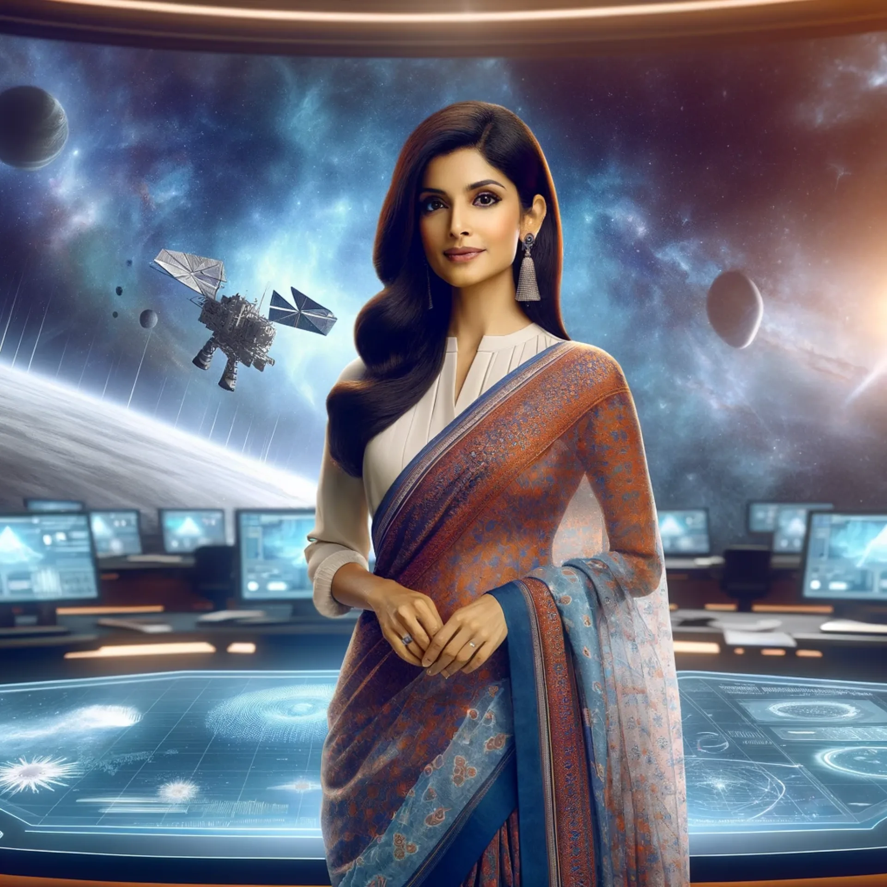
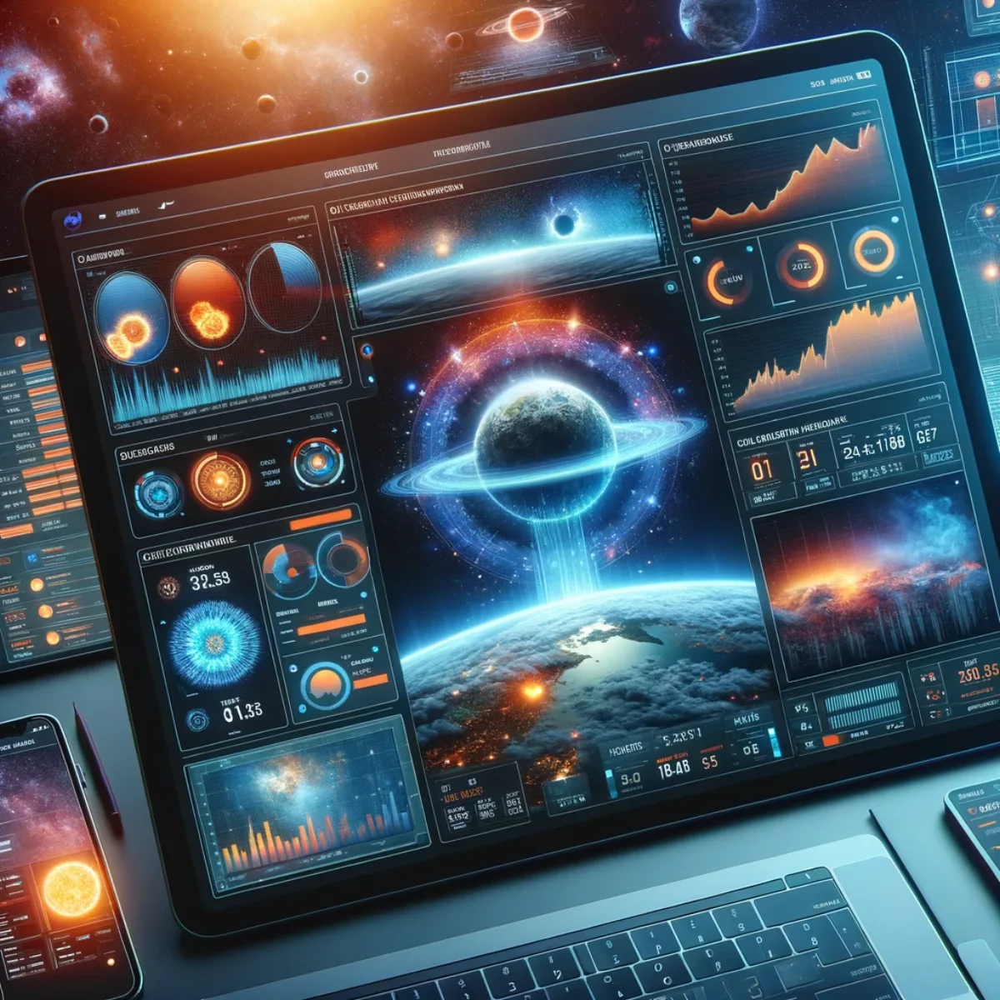
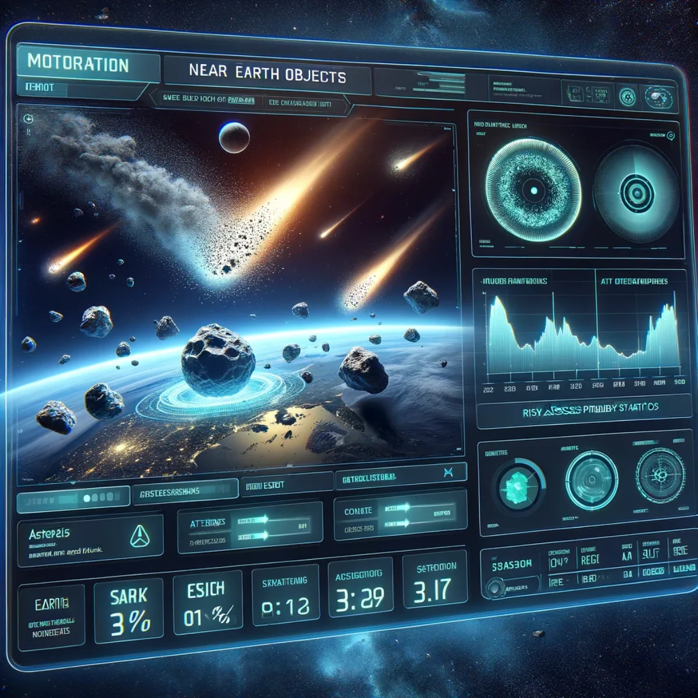

Pathways / Events, music & play
Space Weather & Climate
News, education and live data from the frontiers of space: a virtual reality studio bringing space weather to the world.

News at the frontiers of space and virtual reality
VR News Reading Studio
Step into the future of news broadcasting with our VR Space Weather News Reading Studio. As Solar Sunspot Cycle 25 moves through its high-activity years, help us develop a state-of-the-art environment that keeps the world up to date with factual reporting and live data. The digital interface transports you to the heart of unfolding stories, a studio that blends live data feeds with the vast expanse of space as your backdrop. Immerse yourself in the narrative as you interact with global events in real time, making you not just a spectator but a participant in the news.

Your gateway to the cosmos
VR Space Weather Education
Embark on an educational odyssey within our VR Space Weather Education interface. Dive into interactive learning where the solar system becomes your classroom. Explore celestial phenomena through a hands-on approach, understanding the dynamics of space weather patterns, solar flares, and more, all within a visually rich virtual reality experience designed to ignite curiosity and foster understanding.
Connect. Collaborate. Co-create.
Partner With Us
Co-create the art of synergy within our Space Weather News digital interface and help us bring Space Weather News to the world through the 24-hour news cycle and educational platforms. It is crafted for collaboration, an ongoing project that brings together minds from across the globe. With interactive tools and a network map that highlights connections, we open endless possibilities for partnerships that carry this advanced information to hundreds of millions of students and researchers, pushing the boundaries of what we can achieve collectively in the realm of innovation and beyond.

Unravelling the universe, data point by data point
Open Source NASA Data
Navigate the cosmos with precision and insight through our integrations of open source NASA data. Equipped with live feeds, interactive charts, and sophisticated data visualisation tools, this dashboard puts the universe's pulse at your fingertips. Monitor space weather, track celestial events, and stay informed with the latest from NASA's frontier-breaking discoveries.

From Indian skies to global innovations
Open Source ISRO Data
Delve into the world of space exploration with our ISRO Data interface. Experience the fusion of technology and discovery, where live data feeds illuminate the intricacies of space weather monitoring. With a dynamic world map and an intuitive dashboard, we offer a portal to witness and engage with the stellar work of India's space research, fostering a global community of knowledge and advancement.

Charting space through European eyes
Open Source ESA Data
Immerse yourself in the vastness of space with our ESA Data interface. Stay ahead of the curve with live updates and deep insights from the European Space Agency's pioneering research. Tailor-made for enthusiasts and professionals alike, this interface provides real-time tracking, mission updates, and the latest in space exploration, all through a lens of European innovation and ingenuity.
Orchestrating the celestial symphony
Planetary Alignments
Witness the cosmic dance of planets with our Planetary Alignments tool. Experience the enigmatic movements of our solar system's bodies in real time. This interface offers an interactive cosmic calendar of planetary alignments, retrogrades, and conjunctions, detailed with immersive visuals and predictive modelling that enchants astronomers and astrologers alike.

Guardians of the sky, watchers of the cosmos
Near Earth Objects
With our Near Earth Objects interface, embark on a vigilant watch over our planet's celestial neighbours. Track asteroids and comets as they journey close to Earth's domain. This sophisticated monitoring tool not only maps their paths but also provides crucial data on size, speed, and potential impact risk, serving as a sentinel for both the curious and the cautious.

Sail the starry sea of the Milky Way
Our Galaxy
Navigate the stellar wonders of the Milky Way with our Galaxy interface. Dive into a detailed map of our galaxy, exploring star clusters, nebulae, and space oddities. This portal offers a breathtaking visualisation of the galaxy we call home, complete with educational content that unravels the mysteries of its spiralling arms and the supermassive black hole, or 'dark mode star', at its heart.
Keep exploring